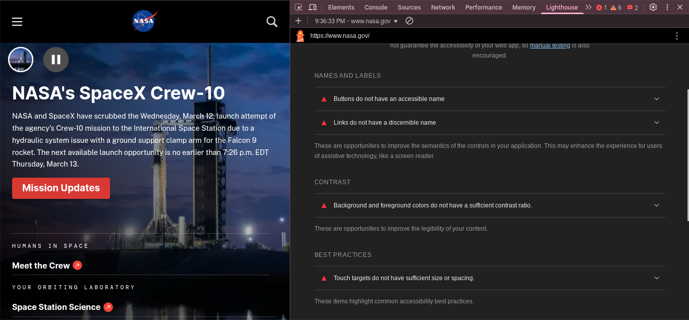

NASA Website Evaluation
Accessibility Audit
Audit Score: 84/100 (from Lighthouse)
The audit showed that NASA’s website has good accessibility but could improve in contrast for some text elements.
Website Information
Name: NASA - National Aeronautics and Space Administration
Target Audience: General public, students, educators, researchers, and space enthusiasts.
Site Organization
The site is structured with a clear navigation bar, categorized content, and sections like Missions, News, Multimedia, and About NASA.
CRAP Design Principles
- Contrast: Dark text on a light background for readability.
- Repetition: Consistent use of fonts, colors, and layout across pages.
- Alignment: Well-structured elements with clear visual hierarchy.
- Proximity: Related elements grouped together for better comprehension.
Accessibility Audit
Audit Score: 64?! Based on the Accessibility Checker website (https://www.accessibilitychecker.org/)
Effectiveness
The site effectively provides information, allowing users to find space missions, news, and multimedia content easily.
Efficiency
The user-friendly layout allows users to perform tasks like watching live streams or reading articles quickly.
Engagement
The website is visually appealing, interactive, and appropriate for space-related content.
Recommendation for Improvement
NASA’s website could improve accessibility by ensuring better contrast in some sections and reducing clutter on the homepage.